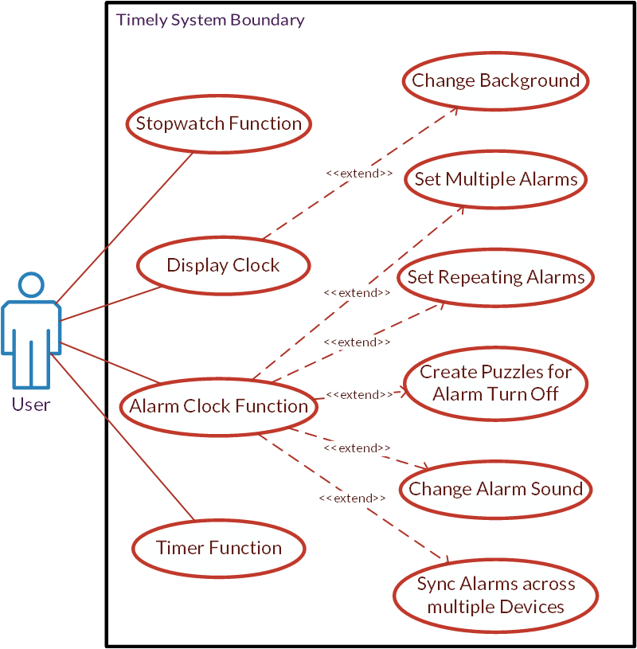
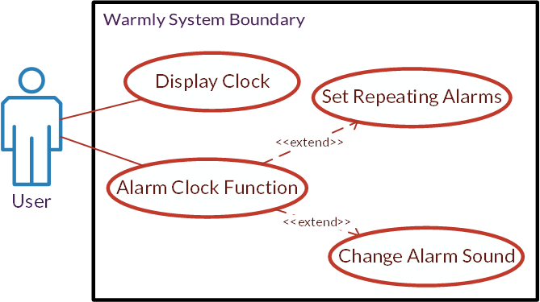

Everybody Needs to Wake Up
A Survey of Android Alarm Clock Application Design
Kashev Dalmia
A Project for ARTD 313 @ UIUC, Sp 2014
good [examples of digital interaction design] oscillate between hiding and revealing themselves
- Good design shows itself, and makes a strong first impression.
- Then, good design takes a back seat to the functionality of the application.
- The user is never overwhelmed with figuring out how to navigate or accomplish a task.
- Things just work the way that you expect them to.
This Project
For this project, I chose to compare two relatively popular Android alarm clock applications: Timely, and Warmly. I think alarm clocks are an interesting thing to investigate because of their simplicity and pervasiveness. These apps in particular are on on the platform with the most market share, so are available to the vast majority of those who use their phones. Combined with the fact that 83 percent of people between the ages of 18 and 29 use their mobile phones to wake up in the morning, it's likely that Timely and Warmly could be considered by a variety of people looking to just Wake Up.
The Timely Approach
You know the stock alarm clock that came with your phone? Timely wants you to never open that again. (Google might too.) The design, however, is decidedly unlike Google's recent flat design language that it has brought to Android. It features a multicolor, customizable, animated background with mostly translucent design elements. One of the key differentiators is the interaction design. Actions like setting an alarm or timer duration are predominantly gesture controlled (with traditional push button fall backs).
Timely is an everything and the kitchen sink type alarm clock application, like the stock one it aims to replace. It has not only an alarm clock, but also a clock intended to use on a dock, a stopwatch, and a timer. The alarms are highly customizable; the sounds are changeable, the days that the alarm sounds are customizable, and the app even allows for custom puzzles to be set to reduce the likelihood of turning off the alarm without actually waking up.
The Warmly Approach
Warmly doesn't want to replace the timer application on your phone. In fact, it wants you to spend as little time with it open as possible. There isn't a stopwatch, a timer, or even multiple alarms. You just tell Warmly what time you'd like to wake up, what days you'd like to wake up, and then what sound you'd like to wake up to. That's all. After that, Warmly shows you a dark clock that disappears with one tap, if anything else on the phone needs to be used.
Unlike Timely's loud, electronic noises, Warmly's alarm sounds are inspired by real life. You can select chirping birds, percolating coffee, frying bacon, or even the sounds of trains next to your cheap New York apartment. When the alarm sounds, the process starts a few minutes before you set the alarm. The alarm sound builds up, giving you the chance to wake up slowly, rather than with a start. Warmly gives you some simple weather information to start your day, then disappears again when dismissed.
Windows and Mirrors
Timely opens strongly by having a striking appearance that looks almost alien on the Android operating system. The background is animated and bubbly; an iOS7 Trojan horse. This all disappears into being a background when an alarm is set. The mechanism for doing this is with a swipe, which is in many ways more natural than traditional soft button touching. Timers are set in a way that recalls twisting a dial, except with a single finger. Switching between functions only requires a swipe across the screen. The usage of the app is easy, intuitive, and while well designed, does not feel over-designed.
Warmly is not nearly as feature filled, and doesn't care to hide this fact. The first thing a user will notice is the bold yellow color, reminiscent of the sun. The user is asked to turn on the app, then the alarm setting screen comes up. Holding the alarm sound buttons starts a preview of the sound. Time setting is intuitive to Android users (the time picker isn't unique like the one in Timely). However, once the time is set, the app knows that its task is done. It displays a dark bedside clock until the alarm goes off, or the screen is tapped, and the app yields control of the screen to the Android operating system, quite literally transitioning from showing itself to hiding itself.
User Personas
In Agile and other user-centric design paradigms, User Personas are made up customers, fictional characters that have needs and wants that could be fulfilled by an application being crafted by the development team.
What if the teams who designed Timely and Warmly had made some user personas?
Eric
Eric is a college freshman who did poorly last semester. The main reason? He had trouble waking up for his 8:00 AM classes. Well, it's his first spring semester, his parents just got him a Nexus 5, and the earliest he's got class is 9:00 AM. He just needs to wake up for it.
- He is a very heavy sleeper, and will mash on the snooze button if given the opportunity.
- He might need to time himself. Sometimes his five minute breaks stretch into twenty...
- He has class at different times on different days, and might need to wake up at varying times.
- He grew up in the computer age, and is tech savvy. He likes to have the latest and greatest tech.
- He doesn't like to be jarred awake. (Does anyone?)
- He is a little homesick. Breakfasts in the dining hall simply don't compare to his mom's Mexican omelets.
- He wants simplify his life as much as possible. He doesn't need too many external distractions. He finds plenty of those on his own.
Becky
Becky is a manager at a large company, a mom with 2 kids, a loving wife, and a homemaker, and just got her first smartphone, a Moto X. She is looking to replace her aging alarm clock with something more high tech. She's going to impress her kids.
- She liked the look of her husband's iPhone, but got an Android phone because it was cheaper.
- She has a lot of things she does during the day, and sometimes has trouble making meetings on time because she's working on something at her desk longer than she should.
- She is an avid baker. And she also subscribes to the Pomodoro Technique. So she might need to set a timer for herself.
- She's not as tech savvy as her children. So simpler will almost always be better for Becky.
- Her husband wakes up later than her, so she often wants to wake up without waking him up as well.
- She thinks her bedside clock is outdated. Perhaps her phone in a small stand could serve the same purpose?
- She always checks the weather in the morning, so she can make sure to dress appropriately.
So what do these users want to do?
In Agile, what users want to do are described in User Stories. Large pieces of functionality are described in Epics, and then the functionality is broken down into smaller, implementable descriptions of what users want to do.
Timely User Stories
- Epic: Users want to wake up.
- Users can set alarms.
- Users can set the days of the week that the alarm goes off.
- Users can select the sounds that plays when the alarm goes off.
- Users can set multiple alarms.
- Users can set puzzles to make sure that they wake up.
- Users can sync alarms across devices.
- Epic: Users want to see the current time on their phone.
- Users can display the time on a dedicated screen.
- Users can set the screen to 'night mode', for bedside viewing.
- Epic: Users want to set timers.
- Users can set timers on a dedicated screen.
- Epic: Users want to have a stopwatch.
- Users can use a stopwatch with lap functionality on a dedicated screen.
Warmly User Stories
- Epic: Users want to wake up.
- Users can set alarms.
- Users can set the days of the week that the alarm goes off.
- Users can select the sounds that plays when the alarm goes off.
- Users can see weather information on the alarm screen.
- Users can wake up gradually because the alarm is gradual.
- Epic: Users want to see the current time on their phone.
- Users can display the time on a dedicated screen.
Use Cases
All these user stories can be combined into one large use case diagram, which describes how the user interacts with the system.
Timely Use Case Diagram
Warmly Use Case Diagram
Eric
Reasons Eric Might Use Timely
- He is a heavy sleeper. The alarm is loud, which wakes him up, the snooze is configurable to be shorter with every snooze, and there are puzzles to make sure he's functioning and not just going through the motions.
- He needs to time himself. Timely has a timer feature that allows him to make sure he's getting through his morning ablutions quickly.
- He has class at different times on different days. Timely allows him to set separate alarms with separate repeating patterns. He can even select different sounds.
- The interface is intuitive. He grew up in the computer age, so after a quick tutorial, setting alarms is effortless.
Reasons Eric Might Use Warmly
- He doesn't like to be jarred awake. Warmly's natural alarm sounds, which build in volume by design, allow Eric to wake up over the course of 5 minutes or so, rather than all at once.
- He misses home. Warmly's breakfast sounds remind him of his mother's bacon!
- He wants simple. Eric might not want to spend all of his time setting alarms, trying to make sure he can sleep until the absolute last possible minute. He just wants to wake up every day, and Warmly allows him to easily set a single, recurring alarm.
Becky
Reasons Becky Might Use Timely
- It reminds her of her husband's iPhone. Which is very pretty.
- She need to remind herself to do things during the day. Because she can name alarms in Timely, she can use alarms to remind herself to attend her meetings, even when she's not looking at her Outlook calendar. She can even use multiple alarms to remind her when she needs to pick up her daughter from dance class.
- She needs to have a convenient timer for both her baking and her pomodoro time management. Timely has a robust timer that is easy to set one handed.
Reasons Becky Might Use Warmly
- She doesn't really know her way around her phone yet. Unlike Timely, Warmly is pretty obvious to navigate, and doesn't require a tutorial.
- She doesn't want to wake her husband sleeping when she wakes up. Warmly's gentle sounds wake her up, but don't affect her husband's slumber.
- She wants a bed time clock to replace her old alarm clock. After she's set her Warmly alarm, the dark clock on the dark screen displayed is perfect for propping up on her nightstand while she charges her phone at night.
- She wants to know the weather so she can know how to dress herself. Warmly's alarm screen displays weather information based on current location.
A Clear Winner?
Everyone has different taste, and taste can't be easily accounted for. However, unless you really, really want to wake up the sound of frying bacon, I have no trouble recommending Timely as the Android alarm clock app you should install. Despite being more complex than Warmly, it is suitably easy to learn, and makes waking up easier.